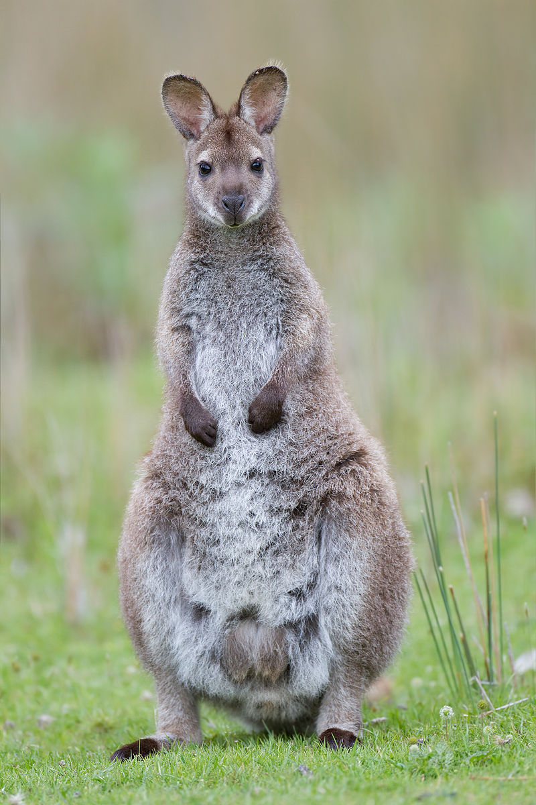

Pour mieux comprendre les interactions de compétition pour les ressources entre deux espèces, nous allons nous concentrer sur le cas des lapins et des wallabies. En effet les wallabies sont des espèces menacées qui font l’objet de nombreuses tentatives de réintroductions en Australie. Même si ce déclin est multifactoriel, les conséquences de l’introduction des lapins furent terribles. En effet, en 1859, le Britannique Thomas Austin a importé 12 couples de lapins, aujourd’hui on en dénombre 200 millions. Ces derniers se sont tellement multipliés que la compétition pour les ressources influe sur les populations de wallabies. C’est notamment le cas pour les wallabies des rochers parmi lesquels 5 espèces sont menacées selon la liste rouge de l’UICN, le petit pétrogale (Petrogale concinna), le pétrogale d’Australie occidentale, (P. lateralis), le wallaby des rochers à queue en pinceau (P. penicillata), le pétrogale de Proserpine (P. persephone) et le pétrogale de sharman (P. sharmanii). À travers l’étude des résultats de notre modèle nous tenteront de trouver des solutions viables afin protéger ces espèces.
Nous cherchons à modéliser l'impact de cette importation sur l'espèce endemique à l'Australie: les wallabies.
Pour notre première simulation, introduisons d'abord des végétaux en vert puis des wallabies en marron clair afin de vérifier si les wallabies sont capables de s'implanter dans le milieu.
Maintenant que nous avons vérifié que les wallabies sont capables de se développer dans leur milieu, introduisons les lapins en marron foncé. Nous les introduirons 500 générations après l'introduction des wallabies pour que ces derniers ai le temps de se développer, simulant ainsi la situation en Australie.
On observe une disparition rapide des wallabies après l'introduction des lapins.
Les Australiens ont réfléchis et employé diverses solutions afin de combattre l'invasion des lapins.
Pour simuler une chasse intensive des lapins, réduisons de moitié l'esperance de vie des lapins.
On observe alors que les lapins n'arrive plus à s'implanter dans l'environement.
Le renard étant un prédateur naturel des lapins sur le continent, les Australiens ont jugé bon de l'introduire en Australie.
On observe.
Après cet échec cuisant, les Australiens ont ensuite décidé d'intoduire un virus hautement contagieux tueur de lapin : la myxomatose.
On observe.
Enfin, les Australiens créent des réserves naturelles afin de sauvegardé les wallabies.
On observe.